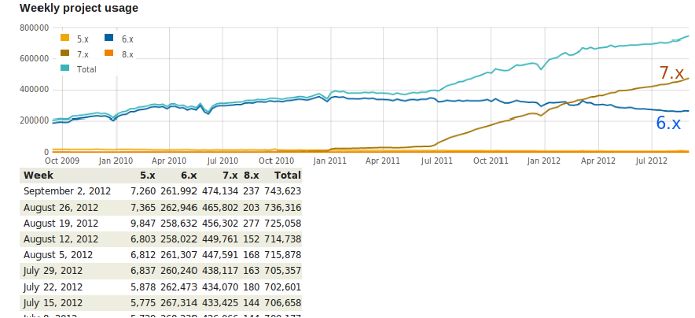
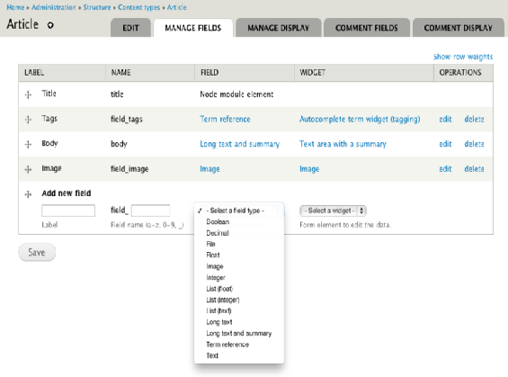
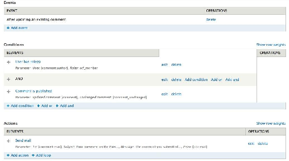
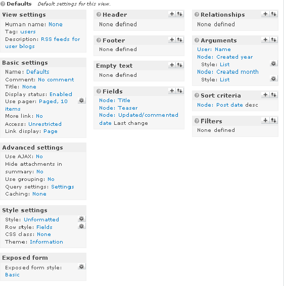
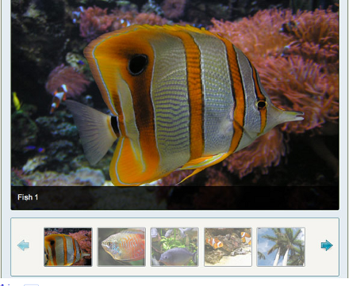
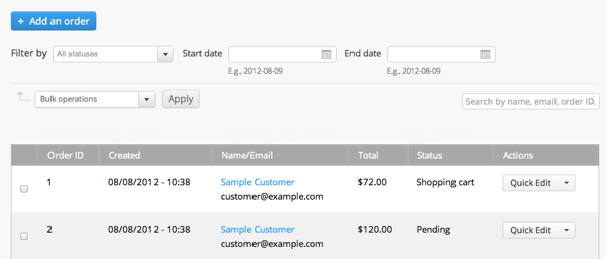

Speaking of Drupal

2% of the Web runs Drupal
Over 20,000 new Drupal 7 sites every month

Conclusion
Drupal is awesome!
Entities/Fields
Click together your own data structure

Rules
Click together your own business logic

Views
Click together your own lists and queries

Drupal
Click together your own site


Under construction picture
What are we using:
The big "Framework" bits: Foundation, Kernel, Routing, DI, Event, CMF Routing
YAML, Validator, Serializer
Tour of the process
How do you convert a system that big?
One step at a time, and we're not done. And won't be.
Drupal::
Controller conversion
Go easy on unit tests early on
HttpKernel: Same as it ever was.
CMF Router: Rewritten by us!
Show routing yml file
Talk about Route Enahncers to define controllers
"Won't get the full SCOTCH controller, but because of this we can easily swap it out."
ParamConverters: Auto upcasting!
Controllers: 4 syntaxes (function, method, service, controller interface)
And oh yeah, forms!
Controllers: Return strings or render arrays or Response.
Advanced stuff: Ajax API, including controller switching
Advanced stuff: Modals/Dialogs
What are we doing that is NOT Symfony?
Plugins, Entity API, our own Translation, CMI
Plugins (Hm, need a crash course)
Entity API
Why not Doctrine ORM? Different model, lots of legacy
CMI: Read/write YAML with caching!
Hooks live... But probably bridged to HookEvent
Twig (Dear god I hope!!!)
Doctrine annotations (for Plugins)
PHPUnit (just for some parts of testing, Simpletest lives. :-( )
Other goodness:
HTML5
Responsive
No more IE 8
Tour module
Edit module
WYSIWYG (CKEditor) by default (you can disable it)
Redesigned edit pages
New toolbar
Good open source citizens
Stuff we're doing elsewhere
We're almost out of time! Come help!
Sprint this weekend
Checkout instructions
Drupal.org issue queues
#drupal-wscci
From #symfony-dev, 11/27/2012:
Hi! I'm very excited about symfony2 framework,
though I cannot find a good CMS to use with symfony2. Can any of
you recommend any?
Yes!
It's called Drupal 8 :-)